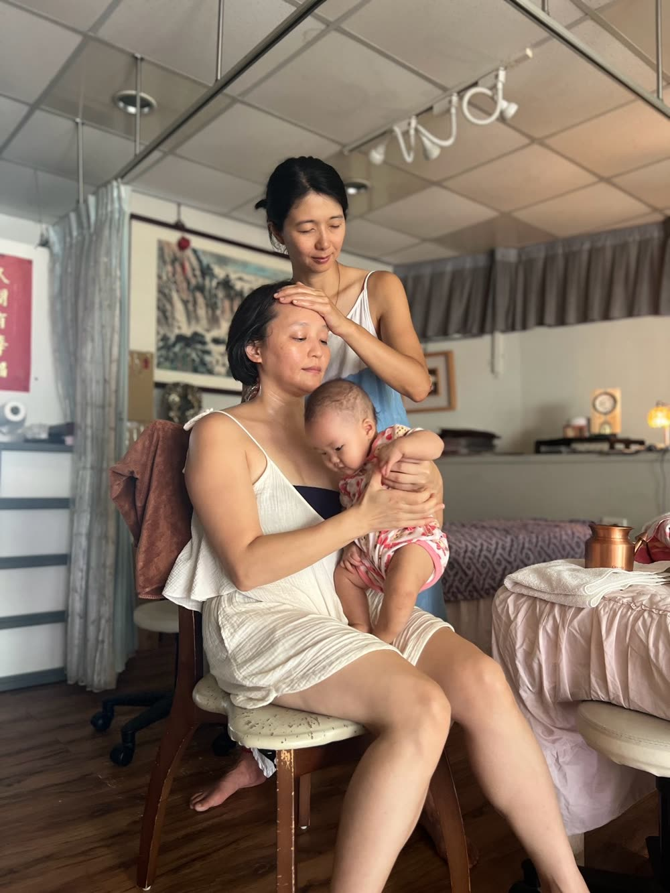

“
前陣子，我到小沐家為她做阿育吠陀產後修復。她是三個孩子的母親，最小的寶寶才六個月大。我看著她的身體——細緻、有彈性，那不是年齡的問題，是她把身心一點一點養回來的痕跡。
能不能喜悅地生活、能不能懷孕，
其實都來自身心的健康與穩定。 我想說的，不是要妳開始某種飲食法。而是——當妳真心渴望新的生命、新的生活，妳自然會開始，把自己好好準備好。這條路或許不容易，但它，始於一份真心的渴望。
其實都來自身心的健康與穩定。 我想說的，不是要妳開始某種飲食法。而是——當妳真心渴望新的生命、新的生活，妳自然會開始，把自己好好準備好。這條路或許不容易，但它，始於一份真心的渴望。
— Milliya・欣妙